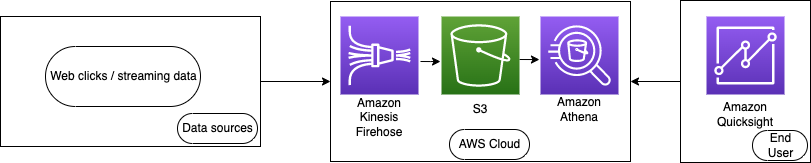
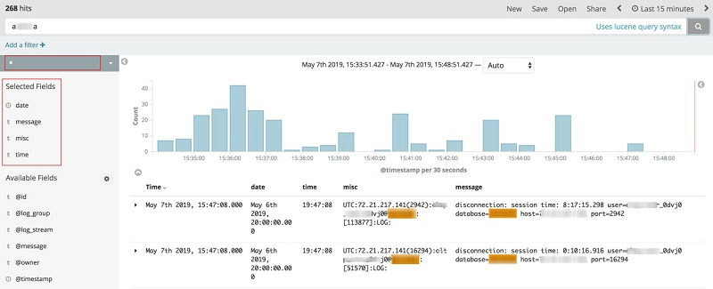
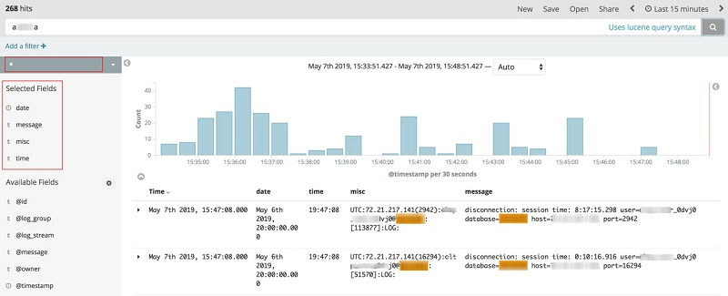

How does this work?
Using Python and AWS Lambda, I am able to create a function that will be triggered by a CloudWatch event and will send a text message to a phone number when a new blog post on my friend's website is posted.
Why are you doing this?
My friend has not gotten around to building an email list for his blog, so I am able to send a text message to my phone when a new blog post is posted. This way I can stay up to date with my friend's blog without having to repeatedly check his website.
What will I learn from this?
- Scraping a website with Python
- Amazon Elasticsearch
- Amazon EMR
- Amazon Data Streams
- Amazon Kinesis Data Firehose
- Amazon MSK
- Amazon Redshift
- AWS Glue
- AWS Lake Formation
Scraping a website with Python
What will we be doing?
Our goal for this section is to parse the HTML of my friends blog and extract the titles of the posts. By doing this, we can store the titles in AWS S3 and then
What will we be using?
- BeautifulSoup4 for
- Can query data using Athena and SQL without actually loading the data into Athena (using metadata)
- Can be integrated with Amazon Quicksight for data visualization
- Can integrate with AWS Glue Data Catalog to store metadata in S3
- Executes queries in parallel, so no micro managing of compute power
What is the pricing of Athena?
- Users are charged by the amount of data that is scanned, rated by the standard S3 pricing
- Cancelled queries are charged for the amount of data scanned at the time of cancellation
- There are no charges for DDL statements (SQL statements)
- One can reduce costs through compressing the data, partitioning, or converting to columnar format
Use case: Streaming Analytics
 In the following use case, we are analyzing streaming data from Amazon Kinesis Data Firehose. The data initially is the clickstream from a user on a website. Firehose takes the data, converts the data to columnar format, then stores it into an S3 bucket to be analyzed. This data is stored in Amazon S3 by using the Kinesis Data Firehose. The data is then analyzed using Athena from the S3 bucket Finally, Amazon Quicksight is used to visualize the data and provide crucial insights for business intelligence services.
Amazon Elasticsearch
What is it?
What are the functions of Elasticsearch?
- Free and opensource search engine for all types of data: (textual, numerical, geospatial, structured, and unstructured)
- Typically combined with Kibana allowing for visualization
What is the pricing of Elasticsearch?
- EC2 pricing for data retrieved
- No charge for data transferred between zones
Use case:
 In this usecase, we will be monitoring the actions taken by customer support agents in a company.
Amazon connect is a cloud contact center that allows the use of AI / ML to automate customer support interactions.
It is important to monitor decisions made by these AI / ML agents as they are made autonomously without human intervention.
If there was an issue with an action taken by an agent, one would want to know what the action was, the time it was taken, and the outcome of the action.
Amazon connect forwards the logs using Kinesis data streams, Kinesis data firehose, and Lambda functions to Amazon Elasticsearch and an S3 bucket.
Elasticsearch can be used to analyze the data and visualize the data with Kabana.
An example of a Kabana visualization is shown below.

In this usecase, we will be monitoring the actions taken by customer support agents in a company.
Amazon connect is a cloud contact center that allows the use of AI / ML to automate customer support interactions.
It is important to monitor decisions made by these AI / ML agents as they are made autonomously without human intervention.
If there was an issue with an action taken by an agent, one would want to know what the action was, the time it was taken, and the outcome of the action.
Amazon connect forwards the logs using Kinesis data streams, Kinesis data firehose, and Lambda functions to Amazon Elasticsearch and an S3 bucket.
Elasticsearch can be used to analyze the data and visualize the data with Kabana.
An example of a Kabana visualization is shown below.

Amazon EMR
What is it?
Amazon EMR (Elastic Map Reduce) is a service for processing and analyzing large amounts of data in the cloud using apache hive, hadoop, apache flink, and apache spark.
What are the functions of Amazon EMR?
- Main component is collecting of EC2 instances (aka nodes)
- Decouples compute and storage with EC2 by storing cluster data on S3
- Controls the network access for instances
- Offers monitoring, replacement of failed instances, and bug fixes
- Analyzes machine learning workloads
- Allows the use of 3 compute resources: EC2, EKS, and Outposts
What is the pricing of Amazon EMR?
- You pay a per-second rate for every second you use, with a one minute minimum
- Example: 10-node cluster running for 10 hours costs the same as a 100-node cluster running for 1 hour
- Dependent on the type of EC2 instances selected for the correct amount of processing power required
Use case:
Amazon EMR is commonly used in Machine Learning, Big Data, and Bioinformatics. A common example would be a smart watch sending all data and running some select EC2 instances everytime new data is sent.
Amazon Data Streams
What is it?
Realtime data streaming service. Captures GBs of data from sources like website clickstreams, events streams (database and location tracking), and social media feeds. The Kinesis family is made up of the following: Datastreams, Firehose, Data Analytics, and Video Streams.
What are the functions of Amazon Data Streams?
- Producers produce data to be processed and it forwards the data to consumers that read or "consume" the data
- Data streams are divided into shards/partitions whose default retention period is 1 day but can retain for up to 7 days
- Kinesis producer library or KPL for short is a library allows for high throughput to the Kinesis data streams
- Goal for Kinesis is to move batch data processing into real-time processing for critical objectives
What is the pricing of Amazon Data Streams?
- $0.04 per stream per hour
- $0.08 data ingested, per GB (includes 24-hour retention)
- $0.04 data retrievals, per GB
- $0.10 data stored, per GB-month (beyond 24 hours, up to 7 days
Use case:
This can be used for a variety of use cases, for example: fraud detection, live leaderboards, and video processing. In this use case we will cover the latter. Using a security camera, we can forward the feed with Kinesis data streams. This feed can fed into AWS Sagemaker / Rekognition Video to automatically detect objects in the video. This has a variety of use cases ranging from detecting a firearm in a video, to detecting a person in a video.
Amazon Kinesis Data Firehose
What is it?
Serverless service that loads data stores and analytics services by capturing, transforming, and load streaming data.
What are the functions of Amazon Kinesis Data Firehose?
- Synchronously replicates data across 3 area zones
- Allows for encryption before delivery
- 60 second batch latency, or minimum data transfer of 32 MB
- Cloudwatch events can be source
What is the pricing of Kinesis Data Firehose?
- First 500 TB per month: $0.029 per GB ingested
- Next 1.5 PB per month: $0.025 per GB ingested
- Next 3 PB per month: $0.02 per GB ingested
Use case:
The majority of the use cases for this service is to serve as a data transfer service to S3, Redshift, Elasticsearch, and Splunk.
Amazon MSK
(Managed Streaming for Apache Kafka)
What is it?
Amazon MSk is a managed cluster service used to build and execute Apache Kafka Applications for the processing of streaming data.
What are the functions of Amazon MSK?
- Populates ML apps, analytical apps, data lakes, and stream changes to and from databases using Apache Kafka APIs
- Easily configures applications by removing all the manual tasks used to configure
- Replacing failing servers
- Handling server patches and upgrades without downtime
- Maintenance of Apache Clusters
- Maintenance of Apache Zookeeper
- Multi-AZ replication for Apache Kafka clusters
- Planning scaling events
What is the pricing of Amazon MSK?
- Varies based on the time and CPU power of the instances rented (similar to EC2)
How is it different from Kinesis?
Kinesis has at least once delivery, whereas MSK guarantees exactly once.
Use case: Integration
Amazon MSK's sole purpose is to integrate well with AWS Glue, Kinesis Data Analytics, and Lambda. Glue executes an Apache Spark job on a MSK Cluster, whereas RDA executes Apache Flink job on a Cluster.
Amazon Redshift
What is it?
Fast and petabyte scale, SQL based, data warehouse to analyze data easily. Along with this, it is also commonly used to perform large scale data migrations.
What are the functions of Amazon Redshift
- Supports online analytical processing (OLAP) and analyzes using SQL and existing business intelligence tools (quicksight or tableau)
- Redshift spectrum can query files on S3 using metadata and without loading
- Can copy snapshots from one region to another
What is the pricing of Amazon Redshift?
- Starts small at $0.25 per hour and can scale up to petabytes of data and thousands of concurrent users
- The node type one chooses to build their cluster effects pricing
- The region where the cluster is located effects pricing
- Billing strategy: on demand or reserved
Use case:
The goal for Amazon Redshift is to allow for the building of an entire business intelligence to occur over a weekend. Anytime one has data that needs to be analyzed from a data lake, they can use Amazon Redshift to analyze the data.
AWS Glue
What is it?
AWS Glue is a serverless extract, transform, and load service used to categorize data and move data between various data stores and streams.
What are the functions of AWS Glue?
- Works with: Redshift (data warehouse), S3, Data Lakes, RDS, or EC2 (for data stores)
- Supports data integrations, data analytics, and ML
- Central repository known as glue catalog that auto generates python/scala code
- Acts as a bridge from multiple data sources to AWS Redshift
What is the pricing of AWS Glue?
- $0.44 per DPU hour, billed per second, with a 1 minute minimum.
- $1.00 per 100,000 objects stored in the Glue Catalog per month
- $1.00 per million requests for objects stored in the Glue Catalog per month
Use case:
In a data centric world, we need ways to centralize data and make it easy to access for analysis and business intelligence. AWS Glue solves the problem of centralizing data by providing a service to merge data from multiple sources into a single data store. This allows for easy access to data from multiple sources, and allows for easy data analysis.
AWS Lake Formation
What is it?
AWS Lake Formation is a managed service that allows you to create, manage, and access data lakes. A data lake is a repository that stores all data in its original form and is used for analysis.
What are the functions of AWS Lake Formation
- Manages the creation/deletion of data lakes
- Can secure data lakes
- Built on S3 so it has the same 99.999999999% durability
- Catalogs and indexes for analysis without data movement
What is the pricing of AWS Lake Formation?
- S3 Pricing applies here
- $2.25 per TB of data scanned
Use case:
Fanatics uses Amazon Simple Storage Service (Amazon S3) to provide secure, durable, and highly scalable storage for its analytical data. Using the Amazon S3 web service interface, the Fanatics data science team can easily store and quickly retrieve any amount of data. Taking advantage of its new AWS data lake solution, Fanatics is now able to analyze the huge volumes of data from its transactional, e-commerce, and back-office systems, and make this data available to its data scientists immediately for analytics.